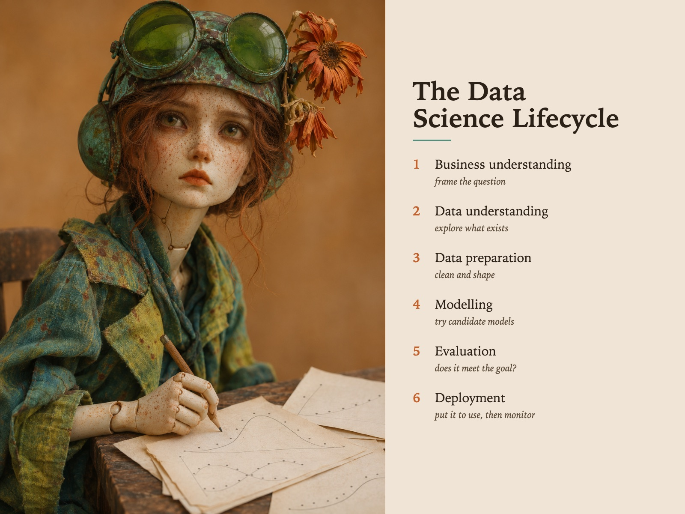

Style Vault / Creative / Verdigris Doll
Verdigris Doll
SV-040

Example: The data science lifecycle, set in Verdigris Doll
In plain words
A hand-made doll with visible seams and paint, photographed with the soft, warm respect of a real portrait, seated against an empty ochre haze. Teal, chartreuse and a touch of rust orange give it a quietly uncanny, melancholy feel. The style is treating a made object as if it were a real person sitting for a painter. Best for: art prints, gallery pieces and portrait series across very different beings. Avoid: glossy collectible renders, horror dolls, brass steampunk, busy backgrounds and cute faces.
Topics it fits
- AI and humanity storytellinga made thing posed like a sitter raises the question of what it means for a machine to seem human
- Digital twins and personasthe doll as a stand-in person mirrors how a customer persona or digital twin is a crafted proxy
- Culture and belonging poststhe tender, serious portrait of an outsider figure carries a story about being seen
- Workshop prompts on empathyan uncanny but gentle face invites people to project and discuss feelings without words
Art style and layout
- Subject an object treated as a sitter. A visibly hand-made doll - seams, paint, fabric - photographed with the respect and framing of a real portrait. It is never posed as a toy and never posed as horror
- Composition three-quarter seated portrait, head large in the upper third, body falling away below, arms folded or resting; eye-level camera; background is empty warm haze, no scene, no props beyond what the figure wears
- Light one large soft diffused source, low contrast, warm. Still-life light applied to a face. No hard shadow, no rim, no drama - the softness is what makes it read as tender rather than as a prop shot
- Palette oxidised verdigris teal + chartreuse-yellow + rust orange, on a porcelain cream figure and a warm ochre ground. Orange appears exactly three times (flowers, mouth, corrosion speckle) and nowhere else. No brass, no gold.
- Material/texture matte unglazed porcelain skin, painted freckles, corroded painted metal with real patina bloom, dried real flowers, hand-dyed speckled cloth. Every surface is aged and imperfect; nothing is glossy
- Mood melancholy, uncanny, tender - a made thing that looks like it is remembering something. Serious, never whimsical
- Camera/render 85mm portrait macro, f/2, shallow depth so the background is pure warm blur, tack sharp on the eyes and the goggle glass
What must stay, what may change
subject - ten far-apart BEINGS, NEVER ten girls in goggles
As JSON
Paste this into a prompt or a skill to reuse the style.
{
"id": "SV-040",
"name": "Verdigris Doll",
"audience": [
"creative"
],
"category": [
"three-d",
"illustration"
],
"format": [
"illustration",
"poster",
"card"
],
"maker": "diffusion",
"keep_and_swap": "subject - ten far-apart BEINGS, NEVER ten girls in goggles",
"elements": {
"subject": "**an object treated as a sitter.** A visibly hand-made doll - seams, paint, fabric - photographed with the respect and framing of a real portrait. It is never posed as a toy and never posed as horror",
"composition": "three-quarter seated portrait, head large in the upper third, body falling away below, arms folded or resting; eye-level camera; background is empty warm haze, no scene, no props beyond what the figure wears",
"light": "one large soft diffused source, low contrast, warm. **Still-life light applied to a face.** No hard shadow, no rim, no drama - the softness is what makes it read as tender rather than as a prop shot",
"palette": "oxidised verdigris teal + chartreuse-yellow + rust orange, on a porcelain cream figure and a warm ochre ground. Orange appears exactly three times (flowers, mouth, corrosion speckle) and nowhere else. **No brass, no gold.**",
"material/texture": "matte unglazed porcelain skin, painted freckles, corroded painted metal with real patina bloom, dried real flowers, hand-dyed speckled cloth. Every surface is aged and imperfect; nothing is glossy",
"mood": "melancholy, uncanny, tender - a made thing that looks like it is remembering something. Serious, never whimsical",
"camera/render": "85mm portrait macro, f/2, shallow depth so the background is pure warm blur, tack sharp on the eyes and the goggle glass"
},
"topics": [
{
"topic": "AI and humanity storytelling",
"why": "a made thing posed like a sitter raises the question of what it means for a machine to seem human"
},
{
"topic": "Digital twins and personas",
"why": "the doll as a stand-in person mirrors how a customer persona or digital twin is a crafted proxy"
},
{
"topic": "Culture and belonging posts",
"why": "the tender, serious portrait of an outsider figure carries a story about being seen"
},
{
"topic": "Workshop prompts on empathy",
"why": "an uncanny but gentle face invites people to project and discuss feelings without words"
}
]
}